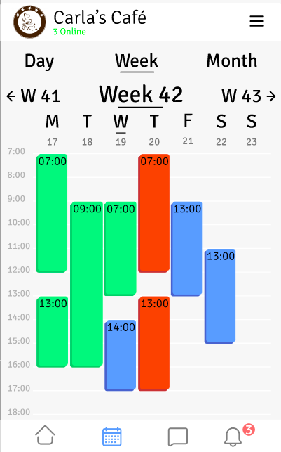
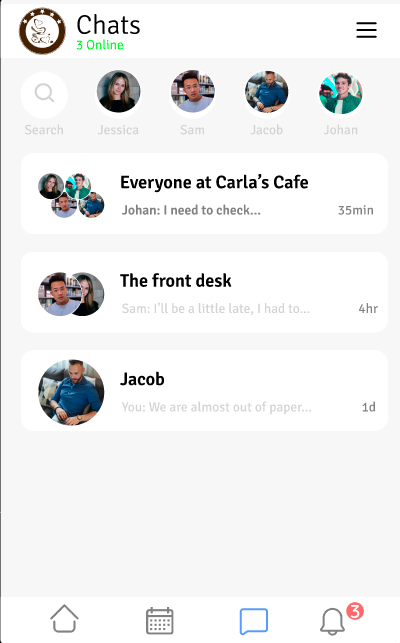
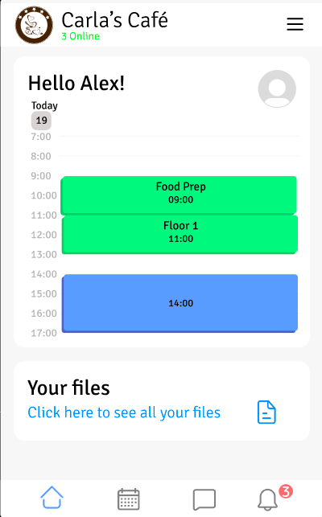
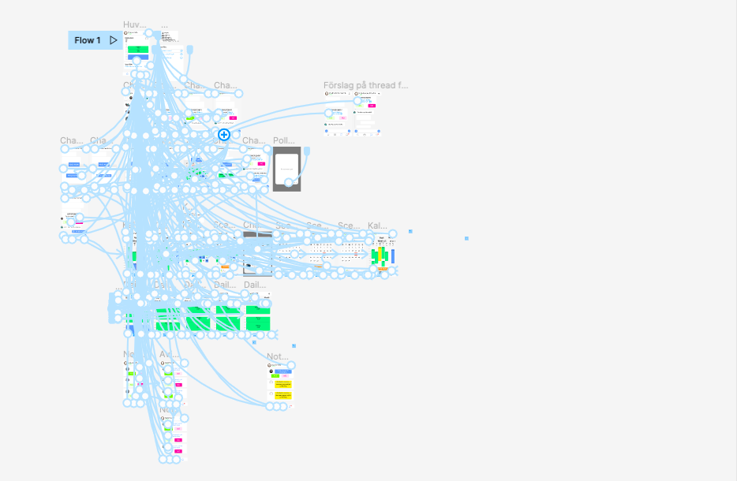
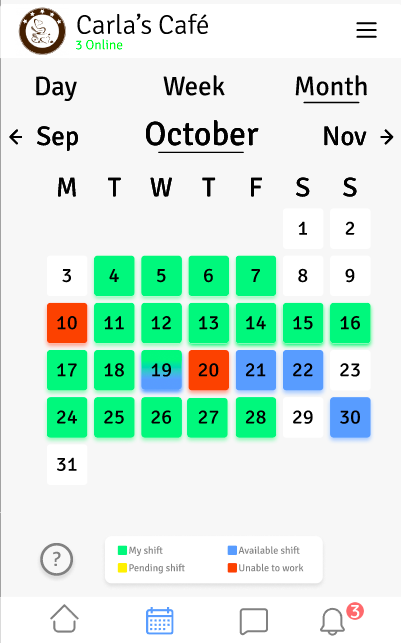
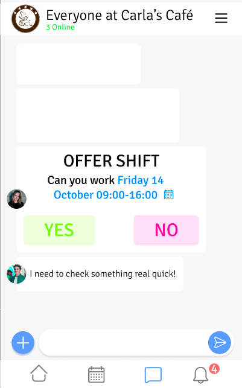
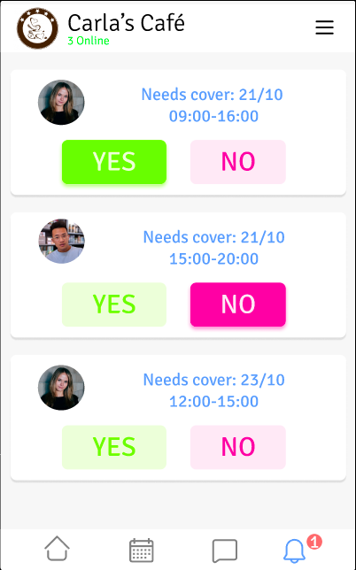

App Prototyping Project
In the course Human-Computer Interaction, the final project was to prototype a digital tool for an assigned target group with focus on user-centered design and usability. Over the course of one month we worked closely with a sample size of our target group, co-workers, to create an app that suited their needs... After a round of interviews we identified core user needs and requirements and then brainstormed a few solutions that were then presented to our supporvisor for feedback. The idea we ended up deciding on was a calender / chatting app that streamlined the process of exchanging and delegating shifts between co-workers.
  We went thought several rounds of interviews, user-testing and prototyping, first low fidilation prototyping using index cards and then interactable high fidilation prototypes in Figma.
Describe app
  